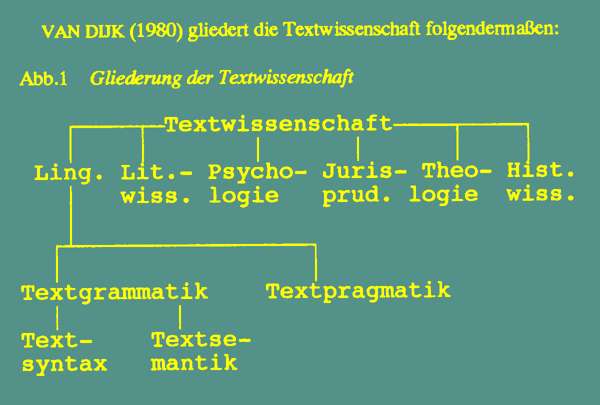
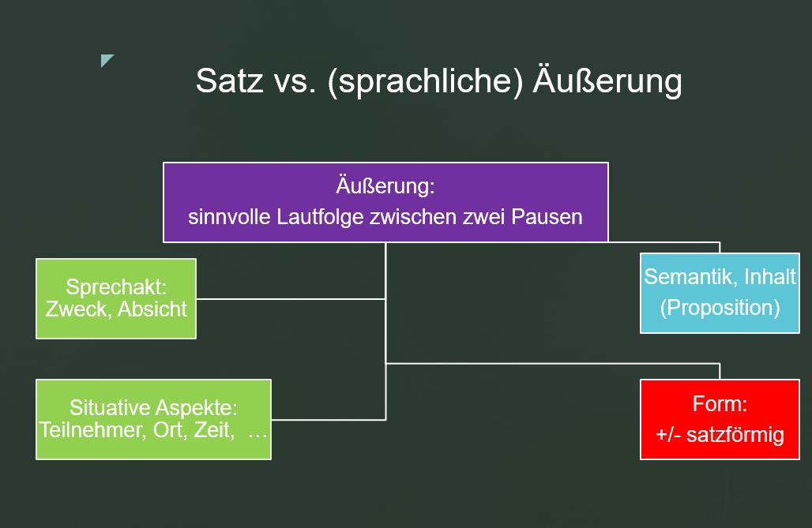

2 Gegenstand und Sinn der Textlinguistik
2.1 Gegenstand
Im Alltag, sei es privat oder im Beruf, verständigen wir uns vorrangig mit Hilfe von mündlich oder schriftlich formulierten Texten. Will man einen Text besser verstehen oder den Aufbau eines Textes durchschaubar machen, ist es sinnvoll, ihn nach nachvollziehbaren Prinzipien und Methoden in kleinere Einheiten zu zerlegen.
Die Sprachwissenschaft is allerdings nicht die einzige Wissenschaft, die sich mit Texten auseinandersetzt.

- Welchen Zweck erfüllen Texte im Rahmen der einzelnen Textwissenschaften?
- Bei welchen Textwissenschaften sind die Texte auch das Ziel der wissenschaftlichen Auseinandersetzung?
Gegenstand der Textlinguistik (Heinemann/Viehweger 1991:17): Die Textlinguistik soll sich auf die Erforschung von Textstrukturen und Textformulierungen beschränken, jeweils in ihrer Einbettung in kommunikative, allgemein soziologische und psychologische Zusammenhänge (interdisziplinärer Ansatz). - Der Text selbst bildet den primären und originären Gegenstand der Wissenschaft vom Text, die zentrale Aufgabe der Textlinguistik.
Gegenstand der Textlinguistik (Bußmann 1990: 779): Die Textlinguistik ist eine sprachwissenschaftliche Disziplin, die sich mit der Analyse satzübergreifender sprachlicher Regularitäten beschäftigt und das Ziel hat, die konstitutiven Merkmale der sprachlichen Einheit Text zu bestimmen und damit eine Texttheorie zu begründen.
2.2 Gesellschaftliche Relevanz
Welche gesellschaftliche Relevanz hat eine derart definierte Textlinguistik?
Texte sind von grundlegender Bedeutung für die Existenz jeder menschlichen Gesellschaft, da mit ihrer Hilfe gesellschaftliche Beziehungen konstituiert werden. Die Fähigkeit zu angemessenem passiven und/oder aktiven Umgang mit häufig auftretenden Textklassen ist Voraussetzung dafür, dass jedes Mitglied einer Gesellschaft sprachlich-kommunikativ tätig sein kann. Der Grad der effektiven und angemessenen Beherrschung einer großen Anzahl kommunikativer Aufgaben durch möglichst viele Mitglieder einer Gesellschaft hat daher Einfluss auf das reibungslose Funktionieren kommunikativer Prozesse, mittelbar auch auf den Zustand der sozialen Beziehungen in dieser Gesellschaft.
Mit Hilfe von Texten wird auch die begriffliche Verallgemeinerung der Wirklichkeit ermöglicht, mentale Prozesse wahrnehmbar, verfügbar (verschriftlicht und gespeichert!), Erfahrungen, Einstellungen und Wertvorstellungen vermittelt. Texte stellen eine wesentliche Grundlage für die Entwicklung und Vervollkommnung des Menschen und jeder Gesellschaft dar.
Textlinguistische Darstellungen können Lesern Einsichten vermitteln in charakteristische oder bewährte Organisationsformen bestimmter Textklassen und in das Funktionieren bestimmter Texte in konkreten gesellschaftlichen Situationen. Textvorkommen können vom Leser selbständiger und bewußter durchdrungen werden.
Beispiel einer Textdefinition (Engel 1988:33)
Texte sind - Geflechte von Äußerungen - konnex - mit nachvollziehbarer Struktur (?) - sortenspezifisch.
Der Text ist die umfangreichste und hierarchisch höchste kommunikative Einheit, die aus inhaltlich zusammenhängenden Äußerungen besteht und eine nachvollziehbare und sortenspezifische Struktur aufweist (Engel 1996: 33).
2.3 Grammatische Ebenen
In der Sprachwissenschaft hat sich eine längere Liste von Einheiten in Texten etabliert, die man verschiedenen Bereichen zuordnen kann. Hier sollen vor allem diejenigen Bereiche angeführt werden, die gemeinsam die Grammatik einer Sprache umreißen.

2.3.1 Äußerung
Eine sprachliche Äußerung kann als sinnvolle Lautfolge (oder Schrifzeichenfolge) eines Textproduzenten zwischen zwei Pausen definiert werden. Wie bei jedem sprachlichen Zeichen erfahren wir mit Hilfe der Form einer Äußerung kommunikativ wichtige Aspekte ihrer Bedeutung, d.h. semantische und pragmatische Merkmale. Einerseits kann die Form einer Äußerung Auskunft darüber geben, was (welchen Inhalt, welche semantische Proposition) uns jemand mitteilen möchte, andererseits aber auch, mit welcher Absicht oder Zweck eine sprachliche Äußerung erfolgt.
Inhalt + Absicht >>
Äußerung: Satzförmig <–> nicht-satzförmig
Sprachliche Äußerungen haben meist die Form (d.h. die Struktur, den Aufbau) von satzförmigen bzw. satzartigen Konstruktionen (z.B. Hauptsätze, Nebensätze, Infinitivgruppen), sie können aber auch nicht-satzförmig realisiert sein (z.B. als Nominalphrase) (Engel 1996: 33). Die Form einer sprachlichen Äußerung hängt von der Absicht des Kommunikationsteilnehmers, den zu übermittelnden semantischen Merkmalen und verschiedenen situativen Umständen ab (den Adressaten der Botschaft, den zeitlichen und räumlichen Kommunikationsverhältnisse u.a.). Die systematische Ermittlung der Formaspekte sprachlicher Äußerungen und ihrer Beziehungen zur Semantik und Pragmatik ist eine der wesentlichen Aufgaben der Syntax. Im Rahmen der Syntax spielt der Satzbegriff eine zentrale Rolle.

Äußerungen lassen sich als Laut- oder Schriftzeichenketten definieren, die von einem Sprecher zwischen zwei Pausen produziert werden und aus einem oder mehreren Sätzen bestehen können (Bußmann 1990: 52). Im Gegensatz zu Sätzen sind sie kommunikative Einheiten und gehören somit auf die Ebene der Performanz oder Parole. Sätze sind hingegen Einheiten des Sprachsystems und gehören somit auf die Ebene der Kompetenz oder Langue.
2.3.2 Prototypischer Satz
In mehreren Jahrzehnten intensiver syntaktischer Forschung wurden mehrere hundert Satzdefinitionen vorgeschlagen. Trotz Gemeinsamkeiten heben sie verschiedene Aspekte eines Satzes hervor. So wie bei vielen anderen Begriffen in der Linguistik (und in der Natur überhaupt) ist eine allgemein gültige Definition nicht möglich (vgl. etwa den Wortbegriff: Was ist ein Wort?)
Wir wollen in Anschluss an die deutsche Grammatik von (Engel 1996: 33) einen prototypischen Satz definieren, und zwar mit folgenden Eigenschaften:
- er soll eine finite Verbform enthalten;
- er soll sich dazu eignen, Sprechhandlungen eindeutig auszudrücken
- er soll kommunikativ selbständig sein und demnach kein unterordnendes Element (z.B. einen Subjunktor) enthalten.

Im Deutschen gibt es eine Reihe von sprachlichen Konstruktionen, die zu verschiedenen Graden diese drei Eigenschaften aufweisen. Diese Konstruktionen nennen wir satzförmige oder satzartige Konstruktionen (sogenannte Haupt- und Nebensätze, Infinitiv- und Partizipialkonstruktionen). Am anderen Ende dieser Skala stehen nicht-satzartige Konstruktionen (z.B. Nominalphrasen).
Ordnen Sie die (mehr oder weniger satzförmigen) sprachlichen Konstruktionen, die Sie im Textausschnitt identifizieren können, entlang der im Rahmen der Syntax eingeführten Satzartigkeitsachse an und entscheiden Sie welche sprachlichen Konstruktionen Äußerungen darstellen!
Wie ich meine Muttersprache wiederfand
In Sibirien geboren, in Deutschland aufgewachsen: Unsere Autorin spricht nur Deutsch, obwohl ihre Muttersprache Russisch ist. Heute macht sie einen Sprachkurs – und lernt die eigene Identität neu kennen.” “„Ochen’ khorosho” – sehr gut, lobt die Lehrerin, als ich ihr meine kläglichen Versuche russischer Schreibschrift zeige, mit ihren vielen Kurven und Häkchen. Ich lächele gequält und betrachte mein Werk, das eher an die ersten Schreibversuche einer Grundschülerin erinnert als an die Handschrift einer Neunundzwanzigjährigen. „Reine Übung”, sagt sie mit breitem russischen Akzent, bevor sie uns die Hausaufgabe für die kommende Woche aufbrummt. „Poka!“, sage ich, bevor ich den Laptop zuklappe. Tschüss!
Aus: Wie ich meine Muttersprache wiederfand (faz.net, 13.1.2022)
2.4 Ermittlungsverfahren
Ähnlich wie auf anderen sprachlichen bzw. grammatischen Ebenen (Phonologie, Morphologie, Syntax, Semantik) kann man für die Identifizierung und Klassifizierung von Texten und Textelementen eine Reihe paradigmatischer und syntagmatischer Verfahren (Proben, Tests) verwenden.
Ermittlungsverfahren
- Verschiebeprobe
- Austauschprobe, Ersatzprobe
- Fragetest (Kombination aus Ersatz- und Verschiebeprobe)
- Weglassprobe, Eliminierungsprobe
- Hinzufügungsprobe, Additionsprobe
Zusätzliche Tests (die aber in diesem Abschnitt nicht beschrieben werden):
6. Koordinationsprobe, Häufungsprobe, Akzentuierungsprobe mit Satz- oder Kontrastakzent
2.4.1 Verschiebeprobe
Die Verschiebeprobe wird auch Umstellprobe oder Permutationsprobe genannt. Dieses Verfahren dient in der Syntax dazu, Konstituenten eines Satzes zu ermitteln. Eine Gruppe von Wörtern, die man gemeinsam an eine andere Stelle im Satz bewegen kann, ohne den Satz grammatisch unakzeptabel zu machen, bildet eine Satzkonstituente (Phrase auf Satzebene). In der Semantik dient die Verschiebeprobe etwa dazu, Bedeutungsveränderungen oder semantische Wohlgeformtheitsbedingungen aufzuzeigen.
In der Textlinguistik kann die Verschiebeprobe zu verschiedenen Zwecken eingesetzt werden. In welcher Hinsicht verändert sich ein Text, wenn wir ein Textelement (z.B. ein einziges Wort, eine oder mehrere Äußerungen oder einen ganzen Absatz, …) an eine andere Stelle im Text verschieben? Ergibt die veränderte Abfolge der Textelemente immer noch einen sinnvollen Text? Oder weicht der Text nun in einer bestimmten Hinsicht von unseren (langjährigen) Erfahrungen mit Texten ab?
Lesen Sie den folgenden Text (1a). In den Versionen (1b) und (1c) haben wir jeweils eine Äußerung an eine andere Stelle im Text verschoben. Ist der Text noch sinnvoll? Wird der Text durch die veränderte Reihenfolge weniger akzeptabel und falls ja, warum?
(1a) Heute Dienstag breiten sich am Vormittag mit einer Störungsfront die Regenschauer bald auf ganz Kärnten aus. Am Nachmittag klingt der Regen allmählich ab und von Westen her beginnen die Wolken aufzulockern. In Oberkärnten kommt regional sogar noch die Sonne zum Vorschein. Die Temperaturen kommen über 11 bis 15 Grad nicht hinaus. https://www.bergfex.at/sommer/klagenfurt/wetter/ (2022-09-27)
(1b) Am Nachmittag klingt der Regen allmählich ab und von Westen her beginnen die Wolken aufzulockern. Heute Dienstag breiten sich am Vormittag mit einer Störungsfront die Regenschauer bald auf ganz Kärnten aus. In Oberkärnten kommt regional sogar noch die Sonne zum Vorschein. Die Temperaturen kommen über 11 bis 15 Grad nicht hinaus.
(1c) Die Temperaturen kommen über 11 bis 15 Grad nicht hinaus. Heute Dienstag breiten sich am Vormittag mit einer Störungsfront die Regenschauer bald auf ganz Kärnten aus. Am Nachmittag klingt der Regen allmählich ab und von Westen her beginnen die Wolken aufzulockern. In Oberkärnten kommt regional sogar noch die Sonne zum Vorschein.
2.4.2 Ersatzproben
Die Kommutationsprobe ist eine Substitutions- oder Ersetzungsprobe. Dieses Verfahren dient dazu, Elemente mit gleicher Funktion im Text festzustellen. Lassen sich zwei oder mehrere (formal unterschiedliche) Ausdrücke füreinander austauschen, dann haben sie die gleiche Funktion im Text. Im umgekehrten Fall haben Sie verschiedene Funktionen im Text.
Lesen Sie den folgenden Witz (2a)!
Beschreiben Sie die Pointe des Witzes (2a) in einer kurzen Äußerung!
In der Version (2b) haben wir eine Phrase durch eine andere ersetzt. In der Version (2c) haben wir zwei Phrasen ausgetauscht (und dadurch auch ihre Reihenfolge im Text).
Woraus schließen Sie, dass sich die ausgetauschten Textelemente auf dasselbe außersprachliche Objekt beziehen?
Ist der Text (2b bzw. 2c) noch sinnvoll?
Ist der Text (2b, 2c) noch witzig?
In welcher Hinsicht hat sich die Charakterisierung der im Witz (2b, 2c) auftretenden Personen geändert?
Weicht der Text (2b, 2c) in irgendeiner Hinsicht von gewissen Stereotypen ab, die Sie im Witz erwartet hätten?
(2a) Kind: “Mammi, Mammi, darf ich heute wieder mit Murmeln spielen?”
Mutter: “Nein mein Kind, Opas Glasaugen bleiben heute drin!“
(2b) Kind: “Mammi, Mammi, darf ich heute wieder mit Opas Glasaugen spielen?”
Mutter: “Nein mein Kind, Opas Glasaugen bleiben heute drin!“
(2c) Kind: “Mammi, Mammi, darf ich heute wieder mit Opas Glasaugen spielen?”
Mutter: “Nein mein Kind, die Murmeln bleiben heute drin!“
In welcher Hinsicht verändert sich die Interpretation des Sprichworts in (3a), wenn wir in (3b) und (3c) jeweils ein Textelement durch ein anderes ersetzen?
(3a) Der Mensch denkt, Gott lenkt.
(3b) Der Mensch denkt: Gott lenkt.1
(3c) Der Mensch dachte, Gott lachte.
2.4.3 Frageprobe
Die Frage(wort)probe ist in der Syntax eine Ersetzungsprobe, bei der man aber meist zusätzlich die Reihenfolge der Satzelemente verändert, da man das Fragewort im Deutschen gewöhnlich an den Satzanfang stellt. Sie dient wie die Anaphorisierungsprobe der Ermittlung der Satzgliedklasse. Eine Konstituente des Satzes wird durch ein entsprechendes Fragewort ersetzt, d.h. man versucht die betreffende Konstituente zu erfragen.
In der Textlinguistik werden Fragetests zu verschiedenen Zwecken eingesetzt, etwa zur Ermittlung bekannter oder neuer Informationen im Text.
Welche Information in der gekennzeichneten Äußerung stellt eine neue Information dar? Welche Information ist bereits bekannt (und wird in dieser Äußerung sogar ausgelassen)?
- Adam und Eva sitzen im Wohnzimmer und warten auf ihre Gäste. Es klingelt an der Haustür.
Eva schaut zum Fenster hinaus und ruft: “Herr Kač ist gekommen.”
Adam wundert sich: Wer?
Eva: Herr Kač.
Adam: Was will der denn?
Welche Information in der gekennzeichneten Äußerung stellen für Eva (oder Sie als Lesende) in dieser Situation eine neue Information dar?
- Adam: Weißt du, was ich heute in der Zeitung gelesen habe?
Adam macht eine lange Redepause.
Eva rollt mit den Augen: Nö, aber spann mich ruhig auf die Folter!
Adam: William Shakespeare war eine Frau!
Eva: Ja ja, und Hitler war Jude.
2.4.4 Eliminierungsprobe
Die Eliminierungsprobe (auch Weglassprobe oder Tilgungsprobe genannt) dient in der Syntax zur Ermittlung von obligatorischen und fakultativ auftretenden Konstituenten des Satzes.
In der Textlinguistik kann man sie verwenden, um obligatorische oder fakultatativ auftretende Textelemente zu ermitteln.
Lesen Sie den Witz in (6a), und zwar auch, wenn Sie ihn schon kennen!
In der Version (6b) haben wir eine Textpassage gelöscht. Wie wirkt sich das auf die Rezeption des Textes (6b) aus? Ist der Text (6b) noch immer sinnvoll? Welche Textversion (6a oder 6b) finden Sie wirkungsvoller? Begründen Sie Ihre Entscheidung!
(6a) Dialog zwischen Mann und Frau:
Sie: “Sag mal, wenn ich sterben würde, tätest Du wieder heiraten?”
Er: “Aber nicht doch.”
Sie: “Wieso nicht? Gefällt es Dir nicht, verheiratet zu sein?”
Er: “So gesehen hast Du Recht, also ich denke schon, dass ich wieder heiraten würde.”
PAUSE
Sie: “Würdest Du mit ihr in unserem Bett schlafen?”
Er: “Ja, ich glaube, das würde ich.”
Sie: “Und Du würdest ihr meine Kleider zum Anziehen geben?”
Er: “Wenn sie ihr gefallen würden, dann täte ich das. Ja, ich würde sie ihr geben.”
PAUSE
Sie: “Und die Bilder von mir, würdest Du sie durch ihre Bilder ersetzen?”
Er: “Ja, das würde ich wohl tun.”
Sie: “Lass mich raten, Du würdest sie sogar mit meinen Schlägern Golf spielen lassen, hab ich Recht?”
Er: “Niemals im Leben nicht! Sie ist Linkshänderin…”
(6b) Dialog zwischen Mann und Frau:
Sie: “Sag mal, wenn ich sterben würde, tätest Du wieder heiraten?”
Er: “Also ich denke schon, dass ich wieder heiraten würde.”
Sie: “Würdest Du mit ihr in unserem Bett schlafen?”
Er: “Ja, ich glaube, das würde ich.”
Sie: “Lass mich raten, Du würdest sie sogar mit meinen Schlägern Golf spielen lassen, hab ich Recht?”
Er: “Niemals im Leben nicht! Sie ist Linkshänderin…”
2.4.5 Hinzufügungsprobe
Die Hinzufügungsprobe (auch: Additionstest) ist das Gegenteil der Tilgungsprobe oder Eliminierungsprobe. Durch Hinzufügung eines Textelements (eines Wortes, einer Phrase, eines Satzes, …) können wir feststellen, ob dieses Textelement mit einem anderen Textelement oder einem bestimmten Text kompatibel (verträglich) ist.
Lesen Sie den Text (7a)!
In der Textversion (7b) haben wir Phrasen hinzugefügt.
Welche Wirkung hat Text (7a) auf Sie, welche Text (7b)?
Woher wissen Sie in Text (7a), wer was macht oder kriegt?
(7a) Paul ist mit Schnuffi zum Tierarzt gegangen. Er hat ihm eine Spritze gegeben.
(7b) Paul ist mit seinem Hund Schnuffi zum Tierarzt gegangen. Der hat dem Hund eine Spritze gegeben.
Wolfgang Mieder: Sprichwörtliche Verfremdungen im Werk Bertolt Brechts, Sprichwörterforschung, Band 20↩︎